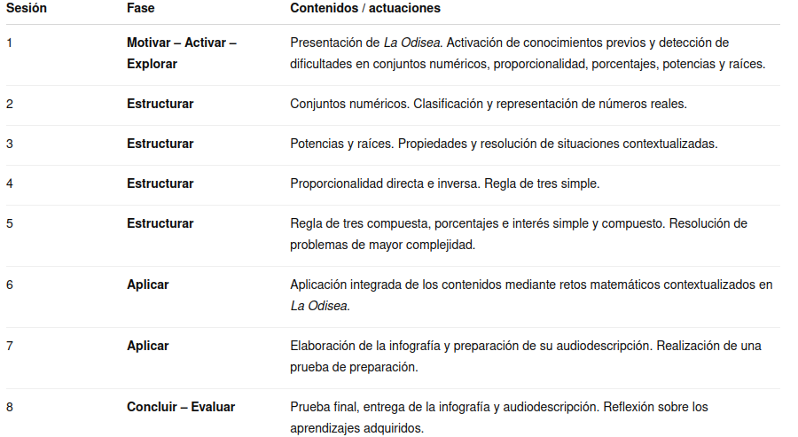

Justificación didáctica
La SDA utiliza La Odisea como contexto motivador y eje vertebrador para trabajar contenidos aritméticos de Matemáticas B de 4.º ESO.
Las situaciones planteadas permiten aplicar los contenidos a problemas contextualizados, favoreciendo la interpretación de información, selección de estrategias, razonamiento matemático, argumentación y comprobación de resultados.
La propuesta busca superar el aprendizaje meramente procedimental, planteando problemas que requieran relacionar contenidos y justificar las decisiones matemáticas adoptadas.
Se vincula principalmente con:
- ODS 4. Educación de calidad: favoreciendo un aprendizaje competencial, significativo y orientado a la resolución de problemas.
- ODS 5. Igualdad de género: incorporando la perspectiva de género mediante el tratamiento de personajes femeninos de La Odisea —Atenea, Penélope, Circe, Calipso, Nausícaa y Arete— y la reflexión sobre los roles de género en el contexto histórico y literario.

La SDA incorpora los siguientes principios pedagógicos establecidos en la LOMLOE y desarrollados para la ESO mediante:
- Aprendizaje significativo, conectando los nuevos contenidos con conocimientos previos y con un contexto narrativo común.
- Resolución de problemas, como estrategia fundamental para el desarrollo de la competencia matemática.
- Atención a la diversidad, mediante diferentes formas de presentar la información y actividades con distintos niveles de complejidad.
- Autonomía y reflexión, favoreciendo que el alumnado seleccione procedimientos, justifique resultados y detecte errores.
- Competencia comunicativa, mediante la argumentación escrita y la elaboración de la audiodescripción.
- Competencia digital y audiovisual, mediante el uso de recursos digitales y vídeos explicativos.
- Educación en valores e igualdad de género, integradas de forma transversal en el contexto de la SDA.
Temporización
La Situación de Aprendizaje se desarrolla en 8 sesiones de 55-60 minutos, distribuidas en las seis fases metodológicas establecidas:

La fase de estructuración constituye el núcleo de la propuesta, ya que permite sistematizar los procedimientos y desarrollar problemas de complejidad progresiva antes de la aplicación integrada.Atención, esta es una propuesta de temporización inicial, no debe tomarse como definitiva.
Producto final
El producto final consiste en la elaboración de una infografía titulada «El cuaderno matemático de Ulises», en la que se sintetizan y relacionan los principales contenidos trabajados:
- conjuntos numéricos;
- potencias y raíces;
- proporcionalidad directa e inversa;
- regla de tres simple y compuesta;
- porcentajes;
- interés simple y compuesto.
La infografía estará vinculada al contenido teórico de la situación de aprendizaje, siendo además una herramienta de síntesis y estudio para el alumnado y deberá presentar información matemática correcta, organizada y comprensible. Además deberá incluir un ejemplo de uso de los contenidos en la vida real.
Como complemento, cada alumno realizará una audiodescripción de su infografía, explicando oralmente su estructura, contenidos y elementos gráficos, de manera que la información pueda ser comprendida sin necesidad de acceder visualmente al producto.
Este producto final entre otras competencias busca potenciar la CPSAA (competencia personal, social y de aprender a aprender) buscando que el alumnado de manera ágil, autónoma y sintética tenga una herramienta más a la que acudir para consultar lo impartido en la situación de aprendizaje, esto es, su infografía resumen.
Rúbrica
Para evaluar el producto final puede usar la siguiente rúbrica:
- Rubric
- Activity
- Name
- Date
- Score
- Notes
- Download
- Are you sure you want clear all form fields?
- Reset
- Apply
- New Window
- Please complete the rubric before saving your score.
- The score can't be saved because this page is not part of a SCORM package.
- You can only save the score once!
- Your score
- Your score will be saved after each change. You can only complete once.
- Your score will be automatically saved after each change.
- You can save the score as many times as you want
- The last score saved is
- You have already done this activity.
- You can do this activity as many times as you want
- Score
- Weight
Metodología
La propuesta se fundamenta en una metodología basada en la resolución de problemas contextualizados, utilizando La Odisea como hilo conductor.
Se parte de una fase inicial de diagnóstico y activación de conocimientos previos, seguida de una estructuración sistemática de los contenidos, con problemas progresivamente más complejos. Finalmente, se integran los aprendizajes mediante tareas de aplicación y un producto final.
Se prioriza el razonamiento matemático frente a la aplicación mecánica de algoritmos, solicitando al alumnado que interprete los datos, seleccione procedimientos, justifique sus estrategias y compruebe la coherencia de los resultados.
Diseño Universal para el Aprendizaje (DUA)
La SDA aplica los tres principios del DUA:
- Múltiples formas de implicación: El contexto narrativo de La Odisea y la progresión mediante retos favorecen la motivación y la participación del alumnado.
- Múltiples formas de representación: Los contenidos se presentan mediante textos, vídeos explicativos de YouTube, esquemas, ejemplos resueltos, ilustraciones y situaciones contextualizadas, facilitando diferentes vías de acceso a la información.
- Múltiples formas de acción y expresión: El alumnado demuestra sus aprendizajes mediante resolución de problemas, pruebas escritas, actividades de aplicación, elaboración de una infografía y producción de una audiodescripción.